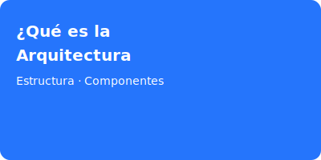

¿Qué es la Arquitectura de Software?
Definición de Arquitectura de Software
La arquitectura de software es la estructura fundamental de un sistema, compuesta por sus componentes, las relaciones entre ellos y las propiedades que estos componentes y relaciones poseen. Define cómo se organiza y comunica el software a nivel alto.
Objetivo principal de la arquitectura en un sistema
El objetivo principal es garantizar que el sistema cumpla con los requisitos funcionales y no funcionales, facilitando la escalabilidad, mantenibilidad y rendimiento.
Componentes básicos de una arquitectura
- Módulos: Unidades funcionales independientes que encapsulan una parte del sistema.
- Interfaces: Definen cómo los módulos interactúan entre sí.
- Conectores: Mecanismos que permiten la comunicación entre módulos, como APIs, buses o protocolos.
Importancia dentro del desarrollo de software
- Escalabilidad: Permite que el sistema crezca de manera eficiente.
- Mantenibilidad: Facilita la actualización y corrección de errores.
- Rendimiento: Optimiza el uso de recursos y la respuesta del sistema.
Roles y responsabilidades de un Arquitecto de Software
El arquitecto de software diseña la estructura del sistema, toma decisiones tecnológicas clave, asegura la calidad y comunica la visión arquitectónica al equipo de desarrollo.
Ejemplos básicos de arquitecturas en proyectos reales
- Aplicaciones web con arquitectura en capas (frontend, backend, base de datos).
- Sistemas de microservicios para plataformas escalables.
- Aplicaciones móviles con arquitectura cliente-servidor.
Conclusión
La arquitectura de software es esencial para el éxito de cualquier proyecto, ya que define la base sobre la cual se construye y evoluciona el sistema. Una buena arquitectura facilita el crecimiento, la adaptación y la calidad del software.